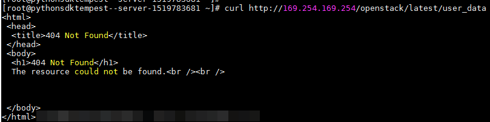

Scenarios
ECS metadata includes basic information of an ECS on the cloud platform, such as the ECS ID, hostname, and network information. ECS metadata can be obtained using either OpenStack or EC2 compatible APIs, as shown in Table 1. The following describes the URI and methods of using the supported ECS metadata.
Notes
If the metadata contains sensitive data, take appropriate measures to protect the sensitive data, for example, controlling access permissions and encrypting the data.
Perform the following configuration on the firewall:
- Windows
If you need to assign permissions to only the administrator to access custom data, enable the firewall as an administrator and run the following commands in PowerShell:
PS C:\>$RejectPrincipal = New-Object -TypeName System.Security.Principal.NTAccount ("Everyone")
PS C:\>$RejectPrincipalSID = $RejectPrincipal.Translate([System.Security.Principal.SecurityIdentifier]).Value
PS C:\>$ExceptPrincipal = New-Object -TypeName System.Security.Principal.NTAccount ("Administrator")
PS C:\>$ExceptPrincipalSID = $ExceptPrincipal.Translate([System.Security.Principal.SecurityIdentifier]).Value
PS C:\>$PrincipalSDDL = "O:LSD:(D;;CC;;;$ExceptPrincipalSID)(A;;CC;;;$RejectPrincipalSID)"
PS C:\>New-NetFirewallRule -DisplayName "Reject metadata service for $($RejectPrincipal.Value), exception: $($ExceptPrincipal.Value)" -Action block -Direction out -Protocol TCP -RemoteAddress 169.254.169.254 -LocalUser $PrincipalSDDL
- Linux
If you need to assign permissions to only user root to access custom data, run the following command as user root:
iptables --append OUTPUT --proto tcp --destination 169.254.169.254 --match owner ! --uid-owner root --jump REJECT
ECS Metadata Types
Table 1 does not contain metadata items ami-id, ami-launch-index, ami-manifest-path, block-device-mapping/, instance-action, instance-id and reservation-id. These metadata items are not compatible with EC2 and are not recommended.
Metadata Type |
Metadata Item |
Description |
|---|---|---|
OpenStack |
/meta_data.json |
Displays ECS metadata. For the key fields in the ECS metadata, see Table 2. |
OpenStack |
/password |
Displays the password for logging in to an ECS. This metadata is used by Cloudbase-Init to store ciphertext passwords during initialization of key-pair-authenticated Windows ECSs. |
OpenStack |
/user_data |
Displays ECS user data. This metadata allows you to specify scripts and configuration files for initializing ECSs. For details, see Passing User Data to ECSs. For password-authenticated Linux ECSs, this metadata is used to save password injection scripts. |
OpenStack |
/network_data.json |
Displays ECS network information. |
OpenStack |
/securitykey |
Obtains temporary AKs and SKs. Before enabling an ECS to obtain a temporary AK and SK, make sure that the op_svc_ecs account has been authorized on IAM and that the desired ECS resources have been authorized for management. |
EC2 |
/meta-data/hostname |
Displays the name of the host accommodating an ECS. To remove the suffix .novalocal from an ECS, see: |
EC2 |
/meta-data/local-hostname |
The meaning of this field is the same as that of hostname. |
EC2 |
/meta-data/public-hostname |
The meaning of this field is the same as that of hostname. |
EC2 |
/meta-data/instance-type |
Displays an ECS flavor. |
EC2 |
/meta-data/local-ipv4 |
Displays the fixed IP address of an ECS. If there are multiple NICs, only the IP address of the primary NIC is displayed. |
EC2 |
/meta-data/placement/availability-zone |
Displays the AZ accommodating an ECS. |
EC2 |
/meta-data/public-ipv4 |
Displays the EIP bound to an ECS. If there are multiple NICs, only the EIP of the primary NIC is displayed. |
EC2 |
/meta-data/public-keys/0/openssh-key |
Displays the public key of an ECS. |
EC2 |
/user-data |
Displays ECS user data. |
EC2 |
/meta-data/security-groups |
Displays the security group to which an ECS belongs. |
Parameter |
Type |
Description |
|---|---|---|
uuid |
String |
Specifies an ECS ID. |
availability_zone |
String |
Specifies the AZ where an ECS locates. |
meta |
Dict |
Specifies the metadata information, including the image name, image ID, and VPC ID. |
hostname |
String |
Specifies the name of the host accommodating an ECS. To remove the suffix .novalocal from an ECS, see: |
Prerequisites
- The target ECS has been logged in.
- Security group rules in the outbound direction meet the following requirements:
- Protocol: TCP
- Port: 80
- Destination: 169.254.0.0/16

If you use the default security group rules for the outbound direction, the preceding requirements are met. Then, the metadata can be accessed. Default security group rules for the outbound direction are as follows:
- Protocol: All
- Port: All
- Destination: 0.0.0.0/0
Metadata (OpenStack Metadata API)
Displays ECS metadata.
- URI
- Usage method
- Example
To use cURL to view Linux ECS metadata, run the following command:
curl http://169.254.169.254/openstack/latest/meta_data.json
To use Invoke-RestMethod to view Windows ECS metadata, run the following command:
Invoke-RestMethod http://169.254.169.254/openstack/latest/meta_data.json | ConvertTo-Json
{ "random_seed": "rEocCViRS+dNwlYdGIxJHUp+00poeUsAdBFkbPbYQTmpNwpoEb43k9z+96TyrekNKS+iLYDdRNy4kKGoNPEVBCc05Hg1TcDblAPfJwgJS1okqEtlcofUhKmL3K0fto+5KXEDU3GNuGwyZXjdVb9HQWU+E1jztAJjjqsahnU+g/tawABTVySLBKlAT8fMGax1mTGgArucn/WzDcy19DGioKPE7F8ILtSQ4Ww3VClK5VYB/h0x+4r7IVHrPmYX/bi1Yhm3Dc4rRYNaTjdOV5gUOsbO3oAeQkmKwQ/NO0N8qw5Ya4l8ZUW4tMav4mOsRySOOB35v0bvaJc6p+50DTbWNeX5A2MLiEhTP3vsPrmvk4LRF7CLz2J2TGIM14OoVBw7LARwmv9cz532zHki/c8tlhRzLmOTXh/wL36zFW10DeuReUGmxth7IGNmRMQKV6+miI78jm/KMPpgAdK3vwYF/GcelOFJD2HghMUUCeMbwYnvijLTejuBpwhJMNiHA/NvlEsxJDxqBCoss/Jfe+yCmUFyxovJ+L8oNkTzkmtCNzw3Ra0hiKchGhqK3BIeToV/kVx5DdF081xrEA+qyoM6CVyfJtEoz1zlRRyoo9bJ65Eg6JJd8dj1UCVsDqRY1pIjgzE/Mzsw6AaaCVhaMJL7u7YMVdyKzA6z65Xtvujz0Vo=", "uuid": "ca9e8b7c-f2be-4b6d-a639-f10b4d994d04", "availability_zone": "lt-test-1c", "hostname": "ecs-ddd4-l00349281.novalocal", "launch_index": 0, "meta": { "metering.image_id": "3a64bd37-955e-40cd-ab9e-129db56bc05d", "metering.imagetype": "gold", "metering.resourcespeccode": "s3.medium.1.linux", "image_name": "CentOS 7.6 64bit", "os_bit": "64", "vpc_id": "3b6c201f-aeb3-4bce-b841-64756e66cb49", "metering.resourcetype": "1", "cascaded.instance_extrainfo": "pcibridge:2", "os_type": "Linux", "charging_mode": "0" }, "project_id": "6e8b0c94265645f39c5abbe63c4113c6", "name": "ecs-ddd4-l00349281" }
User Data (OpenStack Metadata API)
Displays ECS user data. The value is configured only when you create an ECS. It cannot be changed after the configuration.
- URI
- Usage method
- Example
curl http://169.254.169.254/openstack/latest/user_data
Windows:
Invoke-RestMethod http://169.254.169.254/openstack/latest/user_data
ICAgICAgDQoiQSBjbG91ZCBkb2VzIG5vdCBrbm93IHdoeSBpdCBtb3ZlcyBpbiBqdXN0IHN1Y2ggYSBkaXJlY3Rpb24gYW5kIGF0IHN1Y2ggYSBzcGVlZC4uLkl0IGZlZWxzIGFuIGltcHVsc2lvbi4uLnRoaXMgaXMgdGhlIHBsYWNlIHRvIGdvIG5vdy4gQnV0IHRoZSBza3kga25vd3MgdGhlIHJlYXNvbnMgYW5kIHRoZSBwYXR0ZXJucyBiZWhpbmQgYWxsIGNsb3VkcywgYW5kIHlvdSB3aWxsIGtub3csIHRvbywgd2hlbiB5b3UgbGlmdCB5b3Vyc2VsZiBoaWdoIGVub3VnaCB0byBzZWUgYmV5b25kIGhvcml6b25zLiINCg0KLVJpY2hhcmQgQmFjaA==
If user data was not passed to the ECS during ECS creation, the query result is 404.Figure 1 404 Not Found

Network Data (OpenStack Metadata API)
Displays information about all NICs attached to an ECS, including their DNS server addresses, network bandwidth, IDs, private IP addresses, EIPs, and MAC addresses.
- URI
- Usage method
- Example
instance_max_bandwidth and instance_min_bandwidth are in the unit of Mbit/s. If the value is -1, the bandwidth is not limited.
Linux:
curl http://169.254.169.254/openstack/latest/network_data.json
Windows:
Invoke-RestMethod http://169.254.169.254/openstack/latest/network_data.json | ConvertTo-Json
{ "services": [{ "type": "dns", "address": "xxx.xx.x.x" }, { "type": "dns", "address": "100.1 25.21.250" }], "networks": [{ "network_id": "67dc10ce-441f-4592-9a80-cc709f6436e7", "type": "i pv4_dhcp", "link": "tap68a9272d-71", "id": "network0" }], "links": [{ "type": "cascading", "vif_id": "68a9272d-7152-4ae7-a138-3ef53af669e7", "ethernet_mac_address": "fa:16:3e:f7:c1:47", "id": "tap68a9272d-71", "mtu": null }], "qos":{ "instance_max_bandwidth": 1200, "instance_min_bandwidth": 4000 } }
Security Key (OpenStack Metadata API)
Obtains temporary AKs and SKs.
- If an ECS needs to obtain a temporary AK and SK, go to the ECS details page, and configure Agency for the ECS in the Management Information area so that the ECS is authorized on IAM.
- The validity period of a temporary AK and SK is one hour. The temporary AK and SK are updated 10 minutes ahead of the expiration time. During the 10 minutes, both the new and old temporary AKs and SKs can be used.
- When using temporary AKs and SKs, add 'X-Security-Token':{securitytoken} in the message header. securitytoken is the value returned when a call is made to the API.
User Data (EC2 Compatible API)
Displays ECS user data. The value is configured only when you create an ECS. It cannot be changed after the configuration.
- URI
- Usage method
- Example
curl http://169.254.169.254/latest/user-data
Windows:
Invoke-RestMethod http://169.254.169.254/latest/user-data
ICAgICAgDQoiQSBjbG91ZCBkb2VzIG5vdCBrbm93IHdoeSBpdCBtb3ZlcyBpbiBqdXN0IHN1Y2ggYSBkaXJlY3Rpb24gYW5kIGF0IHN1Y2ggYSBzcGVlZC4uLkl0IGZlZWxzIGFuIGltcHVsc2lvbi4uLnRoaXMgaXMgdGhlIHBsYWNlIHRvIGdvIG5vdy4gQnV0IHRoZSBza3kga25vd3MgdGhlIHJlYXNvbnMgYW5kIHRoZSBwYXR0ZXJucyBiZWhpbmQgYWxsIGNsb3VkcywgYW5kIHlvdSB3aWxsIGtub3csIHRvbywgd2hlbiB5b3UgbGlmdCB5b3Vyc2VsZiBoaWdoIGVub3VnaCB0byBzZWUgYmV5b25kIGhvcml6b25zLiINCg0KLVJpY2hhcmQgQmFjaA==
Hostname (EC2 Compatible API)
Displays the name of the host accommodating an ECS. The .novalocal suffix will be added later.
Instance Type (EC2 Compatible API)
Displays an ECS flavor.
Local IPv4 (EC2 Compatible API)
Displays the fixed IP address of an ECS. If there are multiple NICs, only the IP address of the primary NIC is displayed.
Availability Zone (EC2 Compatible API)
Displays the AZ accommodating an ECS.
Public IPv4 (EC2 Compatible API)
Displays the EIP bound to an ECS. If there are multiple NICs, only the EIP of the primary NIC is displayed.
Public Keys (EC2 Compatible API)
Displays the public key of an ECS.
- URI
- Usage method
- Example
curl http://169.254.169.254/latest/meta-data/public-keys/0/openssh-key
Windows:
Invoke-RestMethod http://169.254.169.254/latest/meta-data/public-keys/0/openssh-key
ssh-rsa AAAAB3NzaC1yc2EAAAADAQABAAABAQDI5Fw5k8Fgzajn1zJwLoV3+wMP+6CyvsSiIc/hioggSnYu/AD0Yqm8vVO0kWlun1rFbdO+QUZKyVr/OPUjQSw4SRh4qsTKf/+eFoWTjplFvd1WCBZzS/WRenxIwR00KkczHSJro763+wYcwKieb4eKRxaQoQvoFgVjLBULXAjH4eKoKTVNtMXAvPP9aMy2SLgsJNtMb9ArfziAiblQynq7UIfLnN3VclzPeiWrqtzjyOp6CPUXnL0lVPTvbLe8sUteBsJZwlL6K4i+Y0lf3ryqnmQgC21yW4Dzu+kwk8FVT2MgWkCwiZd8gQ/+uJzrJFyMfUOBIklOBfuUENIJUhAB Generated-by-Nova